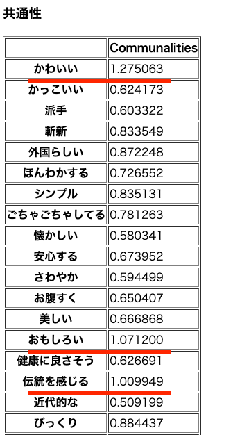
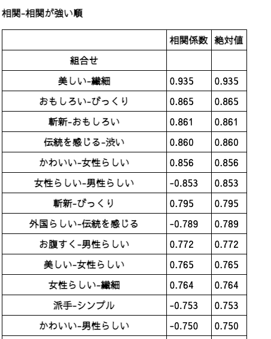
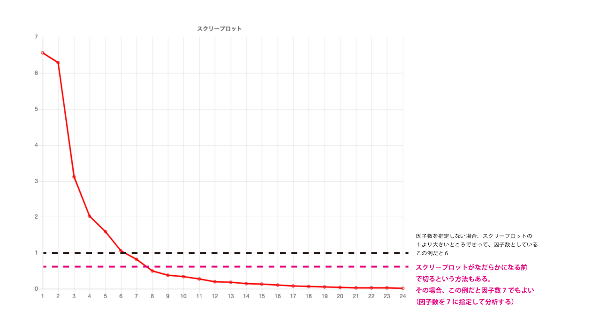
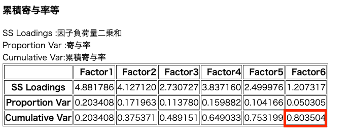

因子分析の補足
1)共通性が１を超えたら、よろしくない
分析アプリで表示される、共通性の表を見て、１を超えているものがある場合は、実は不適な解とされています。
授業で取り扱った例も、動画でちらっと述べたように、実は共通性が１を超えた観測変数がいくつかあり、適切な結果ではありませんでした。

その場合、下記のことを確認してみてください。
- 相関の高い質問項目の片方を削除してみる
分析に使ったクロス集計表を相関分析アプリにかけると、相関が高い質問項目がわかるので、
相関が質問項目のどちらかを削除してみましょう。

美しい、おもしろい、伝統を感じる、女性らしい、男性らしい、という形容詞はかなり様々なことを統合した結果の形容詞です。
そのため、関連する他の形容詞と相関が高くなってしまいます。
様々な解釈ができたり、様々な要素が統合された結果の形容詞の使用は気をつけましょう。
- 因子数を変更してみる(アプリで因子数を指定するにチェックを入れて、因子の数字を入れてみる)

２）累積寄与率が高いほうが良い
累積寄与率という表の一番右下の値は、抽出された因子で全体のどれくらいを表現できているかを示す値です。
0.8の場合→その因子数で80%は表現できている。
数値は高い方が良い。
